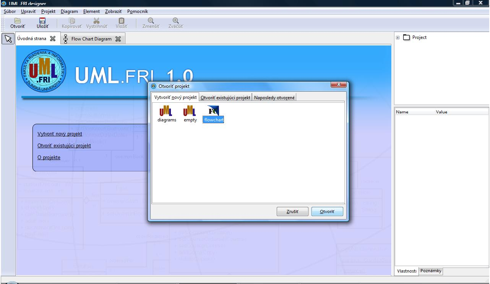
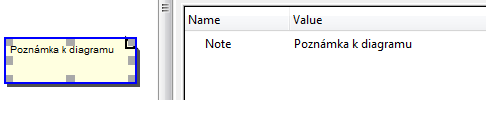
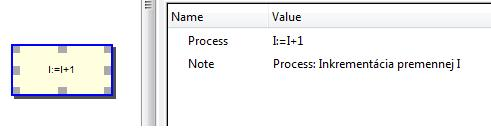
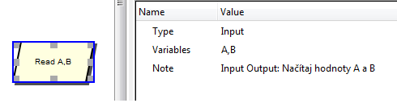
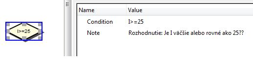
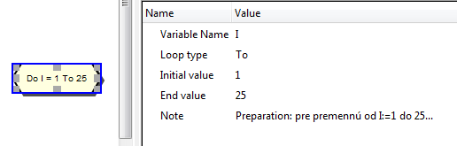
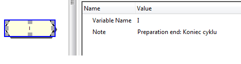
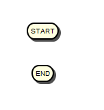
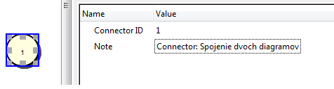
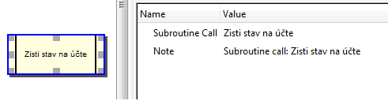

Vývojové diagramy v UML .FRI (FlowChart Diagrams)
V tejto stati je rozobratý systém FlowChart diagramov pre popis štruktúry elementov/entít systému pomocou tejto starej a nenáročnej notácie.
Keďže sú medzi menej skúsenými programátormi stále obľúbené jednoduché spôsoby popisu algoritmov, ktoré chcú implementovať, rozhodli sme sa pridať podporu týchto diagramov do nástroja UML .FRI.
Ku každému elementu je možné zadať jeho vlastnú poznámku v položke Note.
Ak chcete používať Vývojové diagramy v UML .FRI, tak na úvodnej obrazovke kliknite na voľbu Vytvoriť nový projekt a zvoľte možnosť "FlowChart". Po potvrdení tejto voľby sa Vám otvorí nové plátno, na ktoré môžete systémom Drag-n-Drop pridávať jednotlivé elementy.

Entity z oblasti vývojových diagramov, ktoré možno použiť v UML .FRI:
- Poznámka (Note): používateľ môže poznámku pripojiť hocikde na plochu iba pomocou elementu Poznámkové spojenie (Note link)

- Spracovanie údajov (Process): používateľ by mal zdať vykonávaný príkaz do položky Process, napríklad "X=X+1", "Uvar čaj"

- Vstup a výstup údajov (Input/Output): do položky Type používateľ zadá, či sa jedná o vstup alebo výstup. Do položky Variables zadá zoznam premenných, napríklad "Read a,b,c"

- Podmienená operácia (Decision): používateľ zadá podmienku rozhodovania do položky Condition, napríklad "i<5"

- Cyklus (Preparation): používateľ do položky Variable name zadá riadiacu premennú cyklu, do položky Loop type zadá spôsob iterovanie (vzostupne/zostupne). V položke Initial value zadá počiatočnú hodnotu a v End value konečnú.

- Koniec cyklu (Preparation end): používateľ špecifikuje koncovú premennú. Tento element musí byť vždy použitý spolu s elementom Cyklus

- Začiatok (Start): začiatok algoritmu
- Koniec (End): koniec algoritmu

- Spojka (Connector): spojka slúži pri rozsiahlejších algoritmoch pre spojenie rozľahlých vetiev tak, aby používateľ mohol sprehľadniť diagram. Je potrebné zadať identifikátor spojenia, aby bolo zrejmé, kde prerušenie bude pokračovať

- Podprogram (Subroutine call): používateľ zadá názov volanej podprocedúry

Spojenia z oblasti vývojových diagramov, ktoré možno použiť v UML .FRI:
- Čiara toku (Flow line): slúži na logické prepojenie dvoch elementov pre určenie precedencie toku. Nemôže byť asociovaná s elementom Note.
- Poznámková čiara (Note link): táto čiara sa používa na prepojenie Poznámky k diagramu. Neurčuje žiadnu následnosť vykonávaných činností, ako je tomu u Čiarz toku